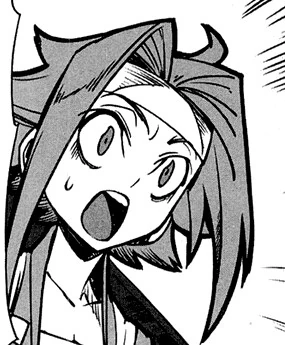
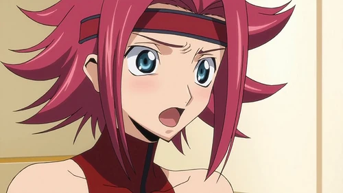
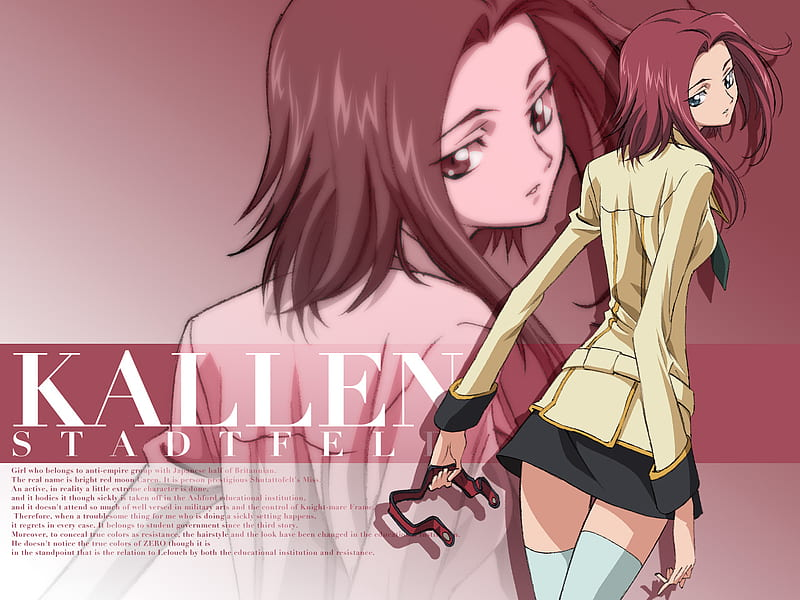

Kallen Kōzuki
Kallen Kōzuki is een belangrijk personage uit de anime
Code Geass: Lelouch of the Rebellion.
Ze is één van de sterkste strijders van de verzetsgroep de Black Knights
en een trouwe bondgenoot van Lelouch.
Algemene informatie
- Volledige naam: Kallen Stadtfeld
- Gebruikte naam: Kallen Kōzuki
- Organisatie: Black Knights
- Afkomst: Britannisch en Japans
Achtergrond
Kallen komt uit een rijke Britannische familie, maar haar moeder is Japans.
Door de oorlog tussen Britannia en Japan voelt ze zich verbonden met het
onderdrukte Japanse volk.
Daarom gebruikt ze de naam Kōzuki wanneer ze deelneemt aan het verzet.
Ze sluit zich aan bij de Black Knights en vecht tegen het Britannische Rijk.

Uiterlijk
Kallen heeft lang rood haar en blauwe ogen.
Op school draagt ze meestal een Britannisch schooluniform
en doet ze alsof ze zwak en ziek is.
Tijdens gevechten draagt ze een pilotenpak en bestuurt ze een Knightmare Frame.
Ze staat bekend als één van de beste piloten van de Black Knights.

Persoonlijkheid
Kallen is moedig, sterk en vastberaden.
Ze geeft niet snel op en vecht altijd voor haar idealen.
Ze kan soms emotioneel zijn, maar ze is ook loyaal aan haar vrienden.
Vooral haar vertrouwen in Lelouch speelt een grote rol in het verhaal.

Rol in het verhaal
Kallen is één van de belangrijkste strijders van de Black Knights.
Ze bestuurt de krachtige Knightmare Frame Guren.
Ze helpt Lelouch bij veel belangrijke gevechten tegen het Britannische leger.
Later begint ze ook te twijfelen over Lelouch en zijn plannen.
Belang
Kallen vertegenwoordigt de strijd voor vrijheid van Japan.
Ze laat zien hoe moeilijk het kan zijn om te kiezen tussen loyaliteit,
vriendschap en rechtvaardigheid.